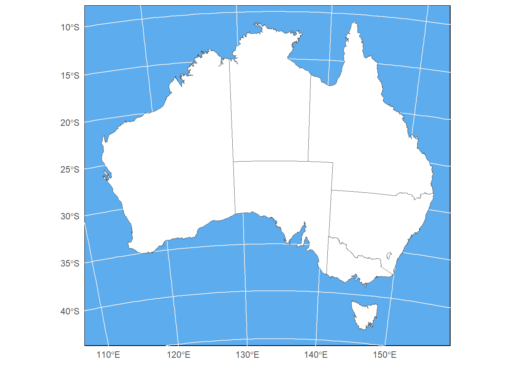
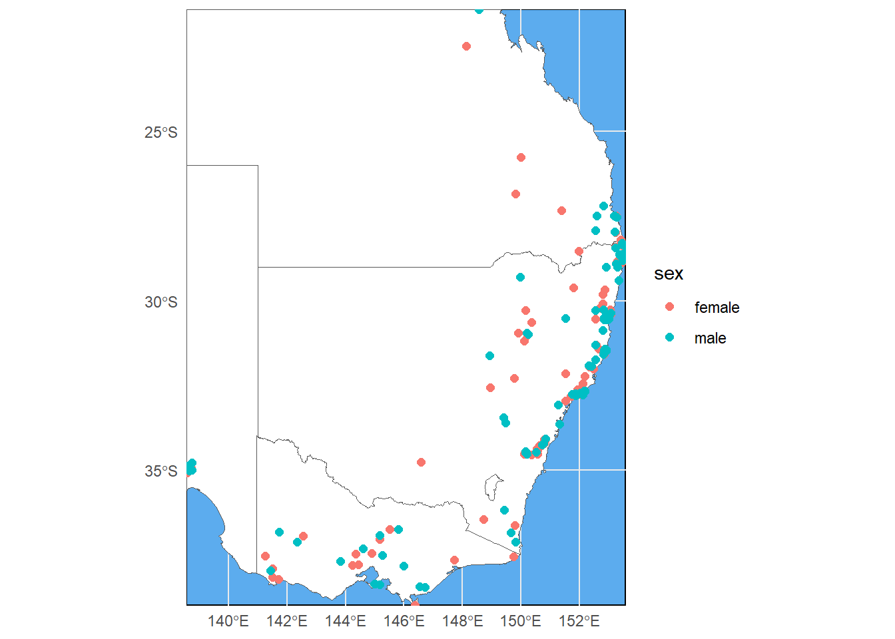
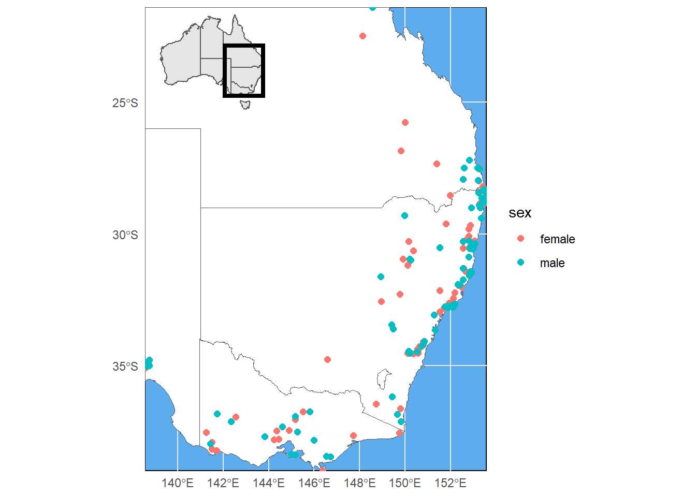

Chapter 9 Working with spatial data in R
Many of you will be familiar with using spatial data such as vector data in form of shapefiles or raster data in GIS software, which can handle these files intuitively. Nevertheless, GIS do have some disadvantages when it comes to either large data sets or automation processes. R offers a full integration of spatial tools and references such as GDAL or PROJ and some great packages to deal with this data seamlessly. Today we are going to learn how to use the package sf and have a brief detour towards raster data in R. We will mainly be looking at how to visualize spatial data and make some nice maps of both shapefiles and rasters. More spatial operations and analyses with both data types will be covered in a later tutorial. You are going to need to install the following packages for this tutorial:
install.packages(c('tidyverse', 'sf', 'raster', 'viridis', 'ggspatial', 'mapview'))And then call the packages:
library(sf)
library(raster)
library(viridis)
library(ggspatial)
library(tidyverse)We will be working on a dataset of koala observations, that you can download here, as well as a basic administrative Areas shapefile of Australia, which you can find here. For the last part we will be looking at rasters, with a digital elevation model (DEM) file as example. You can find it for download here. Please make sure these are stored within a data/ folder in an R project (or working directory).
9.1 Transforming a dataset into an sf object
Let’s first load in our dataset and have a look at it’s structure
koala <- read.csv('data/koala.csv', stringsAsFactors = T) #this is nesecary in R version > 4.0, as the new default is loading strings as.characters
head(koala) # see the first few rows in the console## species X Y state region sex weight
## 1 Phascolarctos cinereus 153.2155 -27.49284 Queensland northern male 7.119754
## 2 Phascolarctos cinereus 148.1443 -22.47617 Queensland northern female 5.451345
## 3 Phascolarctos cinereus 153.2285 -27.50298 Queensland northern male 6.630577
## 4 Phascolarctos cinereus 152.6000 -27.50000 Queensland northern male 6.470019
## 5 Phascolarctos cinereus 153.2817 -27.52589 Queensland northern female 5.620447
## 6 Phascolarctos cinereus 152.8330 -27.20000 Queensland northern male 7.287674
## size fur tail age color joey behav obs
## 1 70.80159 1.858696 1.168241 8 grey No Sleeping Spotlighting
## 2 70.38537 1.852801 1.562456 10 grey-brown Yes Sleeping Opportunistic
## 3 68.65867 2.479280 1.056640 1 light grey No Just Chillin Spotlighting
## 4 72.98919 1.923974 1.801244 1 grey No Sleeping Stagwatching
## 5 65.19529 1.945341 1.625600 10 grey-brown No Sleeping Stagwatching
## 6 70.56514 1.688897 1.086675 12 grey-brown No Feeding OpportunisticAs we can see it contains lots of variables related to each of the observed koalas, such as sex, weight or in which state the observation was made. Additionally, whoever collected this data was so kind to also include the X and Y coordinates, where the observation was made. This we can use to transform this into an sf (simple feature) object.
koala_sf <- st_as_sf(koala,
coords = c("X",
"Y"),
crs = 4326)
str(koala_sf)## Classes 'sf' and 'data.frame': 242 obs. of 14 variables:
## $ species : Factor w/ 1 level "Phascolarctos cinereus": 1 1 1 1 1 1 1 1 1 1 ...
## $ state : Factor w/ 4 levels "New South Wales",..: 2 2 2 2 2 2 2 2 2 2 ...
## $ region : Factor w/ 2 levels "northern","southern": 1 1 1 1 1 1 1 1 1 1 ...
## $ sex : Factor w/ 2 levels "female","male": 2 1 2 2 1 2 2 2 1 1 ...
## $ weight : num 7.12 5.45 6.63 6.47 5.62 ...
## $ size : num 70.8 70.4 68.7 73 65.2 ...
## $ fur : num 1.86 1.85 2.48 1.92 1.95 ...
## $ tail : num 1.17 1.56 1.06 1.8 1.63 ...
## $ age : int 8 10 1 1 10 12 9 1 1 1 ...
## $ color : Factor w/ 6 levels "chocolate brown",..: 3 4 6 3 4 4 6 4 3 3 ...
## $ joey : Factor w/ 2 levels "No","Yes": 1 2 1 1 1 1 1 1 1 1 ...
## $ behav : Factor w/ 3 levels "Feeding","Just Chillin",..: 3 3 2 3 3 1 2 3 1 3 ...
## $ obs : Factor w/ 3 levels "Opportunistic",..: 2 1 2 3 3 1 3 2 2 2 ...
## $ geometry:sfc_POINT of length 242; first list element: 'XY' num 153.2 -27.5
## - attr(*, "sf_column")= chr "geometry"
## - attr(*, "agr")= Factor w/ 3 levels "constant","aggregate",..: NA NA NA NA NA NA NA NA NA NA ...
## ..- attr(*, "names")= chr [1:13] "species" "state" "region" "sex" ...The sf object is a data.frame with a geometry list-column. It supports different format and spatial references. The file as it exists in your R environment is what you would call the Attribute table in a GIS software. In R you can use and manipulate it as any other data.frame. When converting a table into a sf we need to indicate the columns containing coordinates using coords = c() and we can decide on a coordinate reference system using crs=. Here we decide to use WGS84 (CRS = 4326), a standard Mercator coordinate frame for the Earth given in Latitude and Longitude. We can plot our now spatial data with the standard base R command:
plot(koala_sf)This will try to plot all columns (because they are now all spatially referenced). To only plot the geometries, you can:
plot(koala_sf$geometry)
So far so good, but we will need a bit more data to make a nice map!
9.2 Loading shapefiles into R, transforming and plotting
You can load any vector file, such as .shp or .gpkg using st_read. Let’s get our Australia map into the environment and check it out:
states <- st_read("data/Australia/Australia_proj.shp", stringsAsFactors = T)## Reading layer `Australia_proj' from data source `D:\OneDrive\OneDrive - The University of Melbourne\Github\forest-ecology-R-book\data\Australia\Australia_proj.shp' using driver `ESRI Shapefile'
## Simple feature collection with 8 features and 15 fields
## geometry type: POLYGON
## dimension: XY
## bbox: xmin: -2063975 ymin: -4965263 xmax: 1891143 ymax: -1285856
## projected CRS: GDA94 / Geoscience Australia Lambertplot(states$geometry)
Great, we even have states column, which will we will use a bit later. To plot, simply use base R syntax of plotting and then plotting another graph on top using add = T. Instead of calling plot(file$geometry), we can also call st_geometry()
plot(st_geometry(states),
axes = TRUE)
plot(st_geometry(koala_sf), # why does this not work?
col = "blue",
add = T)
Hm, our states are plotting fine, but where are our koala locations? Maybe we should check the coordinate reference system to see if they match… Here’s how that’s done:
st_crs(states)## Coordinate Reference System:
## User input: GDA94 / Geoscience Australia Lambert
## wkt:
## PROJCRS["GDA94 / Geoscience Australia Lambert",
## BASEGEOGCRS["GDA94",
## DATUM["Geocentric Datum of Australia 1994",
## ELLIPSOID["GRS 1980",6378137,298.257222101,
## LENGTHUNIT["metre",1]]],
## PRIMEM["Greenwich",0,
## ANGLEUNIT["degree",0.0174532925199433]],
## ID["EPSG",4283]],
## CONVERSION["Geoscience Australia Standard National Scale Lambert Projection",
## METHOD["Lambert Conic Conformal (2SP)",
## ID["EPSG",9802]],
## PARAMETER["Latitude of false origin",0,
## ANGLEUNIT["degree",0.0174532925199433],
## ID["EPSG",8821]],
## PARAMETER["Longitude of false origin",134,
## ANGLEUNIT["degree",0.0174532925199433],
## ID["EPSG",8822]],
## PARAMETER["Latitude of 1st standard parallel",-18,
## ANGLEUNIT["degree",0.0174532925199433],
## ID["EPSG",8823]],
## PARAMETER["Latitude of 2nd standard parallel",-36,
## ANGLEUNIT["degree",0.0174532925199433],
## ID["EPSG",8824]],
## PARAMETER["Easting at false origin",0,
## LENGTHUNIT["metre",1],
## ID["EPSG",8826]],
## PARAMETER["Northing at false origin",0,
## LENGTHUNIT["metre",1],
## ID["EPSG",8827]]],
## CS[Cartesian,2],
## AXIS["(E)",east,
## ORDER[1],
## LENGTHUNIT["metre",1]],
## AXIS["(N)",north,
## ORDER[2],
## LENGTHUNIT["metre",1]],
## USAGE[
## SCOPE["unknown"],
## AREA["Australia - onshore"],
## BBOX[-43.7,112.85,-9.86,153.69]],
## ID["EPSG",3112]]st_crs(koala_sf)## Coordinate Reference System:
## User input: EPSG:4326
## wkt:
## GEOGCRS["WGS 84",
## DATUM["World Geodetic System 1984",
## ELLIPSOID["WGS 84",6378137,298.257223563,
## LENGTHUNIT["metre",1]]],
## PRIMEM["Greenwich",0,
## ANGLEUNIT["degree",0.0174532925199433]],
## CS[ellipsoidal,2],
## AXIS["geodetic latitude (Lat)",north,
## ORDER[1],
## ANGLEUNIT["degree",0.0174532925199433]],
## AXIS["geodetic longitude (Lon)",east,
## ORDER[2],
## ANGLEUNIT["degree",0.0174532925199433]],
## USAGE[
## SCOPE["unknown"],
## AREA["World"],
## BBOX[-90,-180,90,180]],
## ID["EPSG",4326]]Damn, they do not match. Our Australia shapefile has a different (weird) projection. If you feel it’s tedious to check the CRS in the console, simply type
st_crs(states)==st_crs(koala_sf)## [1] FALSEFALSE is returned, so they don’t match. We need to transform one of them to be able to plot our spatial points on top of the Australia map. sf has a simple solution for this using st_transform(). Let’s do that and plot straight away.
koala_proj <- st_transform(koala_sf, crs = st_crs(states))
plot(st_geometry(states),
axes = TRUE)
plot(st_geometry(koala_proj),
col = "blue",
add = T)
Excellent! In st_transform we can call any crs from another spatial file in the environment, our define our own using a proj4string. If we look at our plot, we can see that the coordinates on the axis look weird. We’d rather like latitude and longitude to make it look more comprehensive. That’s now up to you to fix it!
9.2.1 Challenge 1
Load the Australia_proj and koala data again and plot them on top of each other in Mercator projection (CRS: 4326). Note: check the spatial reference of the maps first!
Extra challenge: color the koala points based on state! Check ?sf::plot for tips
Looks good! You can find the solutions to all challenges posed here at the end of the document. Don’t peek!
Let’s make our maps look even better.
9.3 Simple geometric operations
sf supports any geometric operations you know from GIS software. We will just touch cropping here, but you can also merge, intersect, overlap and many more. For the purpose of mapping, st_crop() is most relevant. Let’s say we want to create a map of all our Koala locations, we won’t necessarily need to show all of Australia, knowing that Koalas are only distributed along the east coast. Let’s crop the Australia shapefile by the extent of our observations:
australia_koala_area<-st_crop(states_proj, koala_sf)## although coordinates are longitude/latitude, st_intersection assumes that they are planarplot(st_geometry(australia_koala_area), axes = T)
plot(st_geometry(koala_sf), add = T)
Great. Let’s say we want to save the new cropped shapefile to an outputs/ folder in our project. For this we simply use st_write():
st_write(australia_koala_area, 'outputs/koala_shape.gpkg')You can choose different file extensions. Here we are saving a geopackage, as it results in only one file, rather than 4-6 for a .shp extension. Up to you ;) Let’s make a good looking map with our data!
9.4 Making a map using ggplot2
ggplot2 supports plotting spatial data by calling geom_sf(), after defining your data to plot. In simple terms we can create a map of Australia by calling:
ggplot(data = states_proj) + geom_sf()
which already looks a lot better than base R. But there are a lot of improvements to be made to create a publication-ready map. First we can assign colors based on columns in your data. We can also remove the standard grey ggplot background with a more map-friendly white grid using theme_minimal()
ggplot(data = states_proj)+
geom_sf(aes(fill = STATENAME))+
theme_minimal()
We don’t really need a legend here, let’s remove it:
ggplot(data = states_proj)+
geom_sf(aes(fill = STATENAME))+
theme_minimal()+
guides(fill = F)
Using coord_sf() we can even change the projection while plotting in ggplot2, without the need of going back to reprojecting or transforming in sf.
ggplot(data = states_proj)+
geom_sf(aes(fill = STATENAME))+
theme_minimal()+
guides(fill = F)+
coord_sf(crs = 3112)
Did you see what changed? Finally we can change the fore- and background color to make it look like proper map in a nice blue ocean:
ggplot(data = states_proj)+
geom_sf(size = 0.3, fill = 'white')+
theme_minimal()+
coord_sf(crs = 3112)+
theme(panel.background = element_rect(fill = 'steelblue2'))
9.4.1 Challenge 2
Add the koala positions on top of the Australia map in ggplot2. Only plot the area that has koalas and color the points by sex of the individual. Please also give the map in Mercator projection
You will need to:
- Add a second layer to your ggplot
- Define the crs

Good job! But unfortunately our cut-out looks like an island surrounded by seawater. If we want the map to look like a close-up of eastern Australia, we can add expand = F to our coord_sf argument:
ggplot(data = australia_koala_area)+
geom_sf(size = 0.3, fill = 'white')+
geom_sf(data = koala_sf, size = 2, aes(color = sex), show.legend = "point")+
theme_minimal()+
coord_sf(crs = 4326, expand = F)+
theme(panel.background = element_rect(fill = 'steelblue2'))
9.4.2 Pimping up you map
9.4.2.1 Adding an inset
When working with these types of maps, you will often be asked to create an inset map that shows the entire area that you cropped from for reference. Let’s add a little Australia shape with a bounding box of our study area to our map. First we need to create the a base map with bounding box and save it to the environment:
inset<-ggplot(data = states_proj, show.legend = "point")+
geom_sf()+
geom_rect(xmin = extent(australia_koala_area)[1], xmax = extent(australia_koala_area)[2],
ymin = extent(australia_koala_area)[3], ymax = extent(australia_koala_area)[4],
fill = NA, colour = "black", size = 1.5)+
labs(x = '', y = '', title = '')+
coord_sf(crs = 4326)+
theme_void()
inset
geom_rect can create any rectangular shape within your ggplot based on xmin, xmax and so on. Since these are dependent on your scales, for mapping we can use the extent of our cropped area from before. extent() is part of the raster package:
extent(australia_koala_area)## class : Extent
## xmin : 138.5795
## xmax : 153.5651
## ymin : -39
## ymax : -21.3906extent(australia_koala_area)[1]## [1] 138.5795By using [1], [2] and so on, we call the respective coordinate from the four rows that this function is giving us. Using theme_void() is getting rid of any axis and grids, so that we have the map only. We also need to save our map as an object:
map<-ggplot(data = australia_koala_area)+
geom_sf(size = 0.3, fill = 'white')+
geom_sf(data = koala_sf, size = 2, aes(color = sex), show.legend = "point")+
theme_minimal()+
coord_sf(crs = 4326, expand = F)+
theme(panel.background = element_rect(fill = 'steelblue2'))We use annotation_custom() and ggplotGrob() to place an inset into the main map:
map+annotation_custom(ggplotGrob(inset), xmin = 139, xmax = 144, ymin = -26, ymax = -20)
The size and position here is defined by xmin = etc. This needs a bit of fiddling around to get it right. Also be mindful that we are using a Mercator projection here and are in the southern hemisphere, so our ymin and ymax values need to be given in negative form. Now this is a proper map, ready to be put in your next publication! We will briefly talk about rasters, because you are likely to use them if you are working with shapefiles anyway. It is similarly easy to work with rasters in R:
9.4.2.2 Adding a north arrow
Even though 99% of all maps are oriented with northern direction facing up, it is common practice to add north-pointing arrows to maps for orientation. The ggpsatial package allows us to place one into our map easily
map+annotation_custom(ggplotGrob(inset), xmin = 139, xmax = 144, ymin = -26, ymax = -20)+
annotation_north_arrow(location = "tr", which_north = "true")Easy, right? The location argument defines where the arrow is placed. In our case 'tr' stands for top-right. We can also place it at the bottom right with 'br', or elsewhere using the same logic. Still it’s not that clean. We can change the style of the arrow. For options check ‘?north_arrow_orienteering’:
map+annotation_custom(ggplotGrob(inset), xmin = 139, xmax = 144, ymin = -26, ymax = -20)+
annotation_north_arrow(location = "tr", which_north = "true",
style = north_arrow_fancy_orienteering)pad_x and pad_y control how far the arrow is placed from the edge of the frame. Let’s bring it closer to the eastern frame and away from the coastline:
map+annotation_custom(ggplotGrob(inset), xmin = 139, xmax = 144, ymin = -26, ymax = -20)+
annotation_north_arrow(location = "tr", which_north = "true",
pad_x = unit(0.0001, "cm"), pad_y = unit(0.1, "cm"),
style = north_arrow_fancy_orienteering)That looks like a professional map. One more thing I’d maybe do is place the legend within the empty space in the west and give it a frame:
map+annotation_custom(ggplotGrob(inset), xmin = 139, xmax = 144, ymin = -26, ymax = -20)+
annotation_north_arrow(location = "tr", which_north = "true",
pad_x = unit(0.0001, "cm"), pad_y = unit(0.1, "cm"),
style = north_arrow_fancy_orienteering)+
theme(legend.position = c(0.15, 0.5),
legend.background = element_rect(fill="white",
size=0.5,
linetype="solid",
colour ="black"))How’s that? Time to test all your skills now! :)
9.4.3 Challenge 4
Create a map of koalas in a state (or combination of states) of your choosing only. Only show the respective area and add a logical inset figure. Please also color the points by a variable of your choosing, move the legend inside your plot and make sure the title is logical. Have fun changing colors and a other objects. The nicest maps wins :)
Extra challenge: Can you find out how to add a scale-bar? Please add it in the bottom-right corner (Hint: it is also part fo the ggspatial package.
## although coordinates are longitude/latitude, st_intersection assumes that they are planar## Scale on map varies by more than 10%, scale bar may be inaccurateThat looks good :) Ready to put it into your next paper or report! Let’s move over and have a look at raster data.
9.5 Some R raster basics
Raster support in R is made available using the package raster. One called, we can load and plot a raster using the same command. Let’s get our digitial elevation model (DEM) to play with:
dem<-raster('data/DEM.tif')
summary(dem)## DEM
## Min. 0.00000
## 1st Qu. 89.28996
## Median 157.82292
## 3rd Qu. 400.73164
## Max. 2099.59570
## NA's 76084.00000plot(dem)
In a raster, each cell (or pixel) has a spatial reference and a value. In this case we have the elevation in meters for each degree (0.01 * 0.01) in southeastern Australia.
9.5.1 Cropping/Masking
Let’s say we’re only interested in the area of Victoria. We can use a spatial vector to mask out the state area from the raster. First we need to create a mask. We already know that our Australia shapefile contains a STATE column. We can use that to subset the shapefile and use the subset as a mask. Simple dplyr commands and %>% work on sf features, which makes working with them so easy in R!
vic<-states_proj%>%filter(STATENAME == 'Victoria')%>%st_transform(crs = st_crs(dem)) # we also transform the crs to be sure they match
plot(dem)
plot(vic$geometry, add = T)
To remove anything outside of Victoria, we use raster’s mask() and end up with the DEM for Victoria only:
dem_vic<-mask(dem, vic)
plot(dem_vic)9.5.2 Plotting and extracting data
We can now also filter our koala dataset to only have koalas in Victoria to plot over our DEM.
koala_vic<-koala_sf%>%filter(state == 'Victoria')%>%st_transform(crs = st_crs(dem))
plot(dem_vic)
plot(koala_vic$geometry, color = 'black', add = T)
Often we are using rasters and spatial vector data together to extract data that is generally stored in raster form (such as elevation, mean temperatures or other topographic variables). For example if we are interested to see at which elevation our Koalas were observed in Victoria to make assumptions about their habitat preferences or temperature tolerances. If the CRS of both the raster and shapefile match, we can use extract() to add data from the raster to our spatial points as a new column:
koala_vic$ele<-raster::extract(dem_vic, koala_vic)
summary(koala_vic$ele)## Min. 1st Qu. Median Mean 3rd Qu. Max.
## 16.62 67.95 185.34 218.54 349.87 648.06hist(koala_vic$ele)We can see most observations were made below 200 meters. The median elevation for koalas in our dataset was 185. Again if we want to make nice and informative maps out of rasters, even in combination with spatial vector data, ggplot2 is the way to go!
9.6 Plotting rasters in ggplot2
Before we can plot a raster, we have to transform it into a data.frame containing of columns X and Y as coordinates and a column containing the raster value of each pixel. Since rasters can be large and the resulting data frames even larger, we first take a sample of the raster using sampleRegular(), which reduces the resolution:
sample_raster<-sampleRegular(dem_vic, size = 5e5, asRaster = TRUE) %>%
as.data.frame(xy = TRUE, na.rm = TRUE)%>%
setNames(c('x', 'y', 'layer'))The size argument defines the amount of pixels to filter. Make sure to always use xy = TRUE, so that the coordinates are included in the new data.frame.
## x y layer
## 902 140.9675 -33.9925 19.73859
## 1803 140.9675 -34.0025 48.89558
## 1804 140.9775 -34.0025 25.70812
## 2704 140.9675 -34.0125 53.28782
## 2705 140.9775 -34.0125 27.96507
## 2706 140.9875 -34.0125 20.13142We now have a format that ggplot can work with using geom_raster():
ggplot(data = sample_raster, aes ( x = x, y = y, fill = layer))+
geom_raster()
Let’s make it look a bit prettier. The package viridis offers a few great color palettes for gradients of continuous variables:
ggplot(data = sample_raster, aes ( x = x, y = y, fill = layer))+
geom_raster()+
scale_fill_viridis(option = 'A')+
labs(x = 'Longitude', y = 'Latitude', fill = 'Elevation')+
coord_sf(crs = 4326)+
theme_bw()
We can plot additional layers on top of the raster by adding more geom_’s. That means we can plot rasters and spatial vectors together to make great maps for your papers and reports. I’m sure you can figure it out yourself for the next and final challenge!
9.6.1 Challenge 4
Add koala observations, color points by a categorical variable of your choice and change the color scheme. Also avoid the ‘island’ look as we’ve done before. Feel free to add any extra data/symbols you want, from what we’ve covered before
hint: to add different types of data, each data layer needs its own data source!: (geom_raster(data = sample_raster, aes(x = x, y = y, fill = layer))+…)
Good job everyone. You’re on the best way to becoming experts in spatial data processing in R!
9.7 Solutions to all Challenges
9.7.1 Challenge 1
states_proj <- st_transform(states, crs = st_crs(koala_sf))
plot(st_geometry(states_proj),
axes = TRUE)
plot(st_geometry(koala_sf),
col = koala_sf$state,
add = T)9.7.2 Challenge 2
ggplot(data = australia_koala_area)+
geom_sf(size = 0.3, fill = 'white')+
geom_sf(data = koala_sf, size = 2, aes(color = sex))+
theme_minimal()+
coord_sf(crs = 4326)+
theme(panel.background = element_rect(fill = 'steelblue2'))9.7.3 Challenge 3
#subset your data to NSW koalas only
koala_sf_NSW<-koala_sf%>%filter(state == 'New South Wales')
#create the inset figure
NSW_koala_area<-st_crop(states_proj, koala_sf_NSW)
inset_NSW<-ggplot(data = states_proj, show.legend = "point")+
geom_sf(fill = 'white')+
geom_rect(xmin = extent(NSW_koala_area)[1], xmax = extent(NSW_koala_area)[2],
ymin = extent(NSW_koala_area)[3], ymax = extent(NSW_koala_area)[4],
fill = NA, colour = "black", size = 1.5)+
labs(x = '', y = '', title = '')+
coord_sf(crs = 4326)+
theme_void()
#create the map
map_NSW<-ggplot(data = NSW_koala_area)+
geom_sf(size = 0.3, fill = 'lightgrey')+
geom_sf(data = koala_sf_NSW, size = 2, aes(color = joey), show.legend = "point")+
theme_minimal()+
coord_sf(crs = 4326, expand = F)+
theme(panel.background = element_rect(fill = 'lightblue'))
#combine
challenge4<-map_NSW+annotation_custom(ggplotGrob(inset_NSW), xmin = 147, xmax = 149, ymin = -30, ymax = -27.5)+
labs(x = '', y = '', color = 'Had a joey', title = '')+
theme(legend.position = c(0.81, 0.12),
legend.background = element_rect(fill="white",
size=0.5,
linetype="solid",
colour ="black"))
challenge4
#adding a scale bar
challenge4+
annotation_north_arrow(location = "bl", which_north = "true",
pad_x = unit(0.0001, "cm"), pad_y = unit(0.7, "cm"),
style = north_arrow_fancy_orienteering)+
annotation_scale(location = 'bl', style = 'ticks', text_col = 'black')9.7.4 Challenge 4
ggplot()+
geom_raster(data = sample_raster, aes(x = x, y = y, fill = layer))+
geom_sf(data=koala_vic, size = 2, aes(color = sex), show.legend = "point")+
scale_fill_viridis(option = "D") +
labs(x = "Longitude",
y = "Latitude",
fill = "Elevation",
color = 'Gender') +
coord_sf(crs = 4326, expand = F) +
theme_bw()